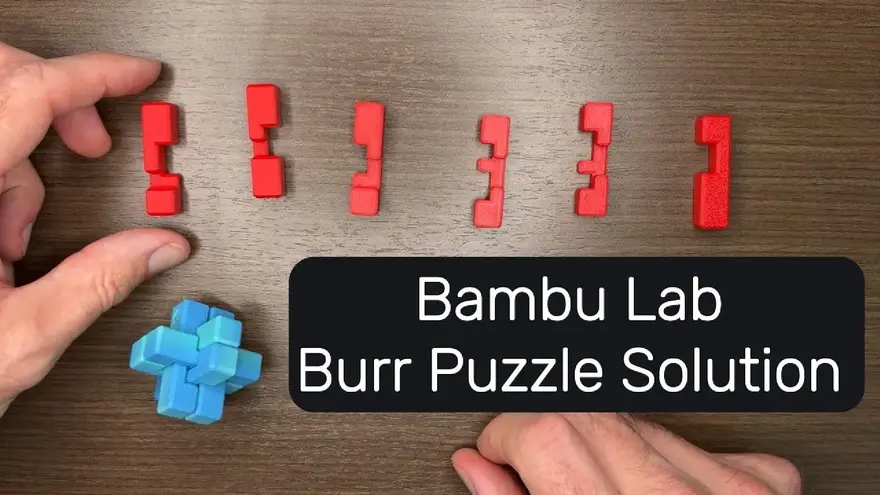
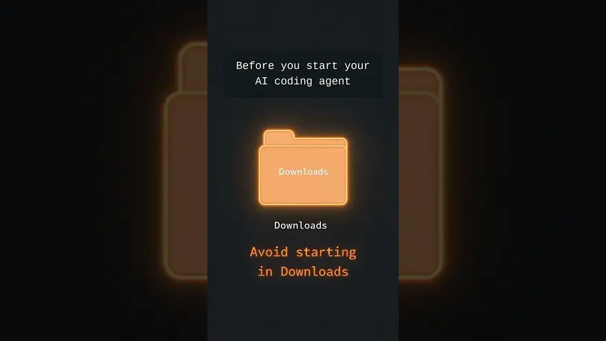
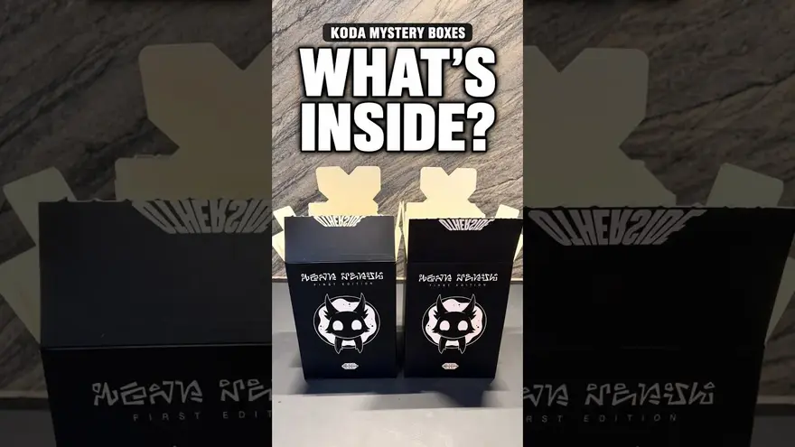
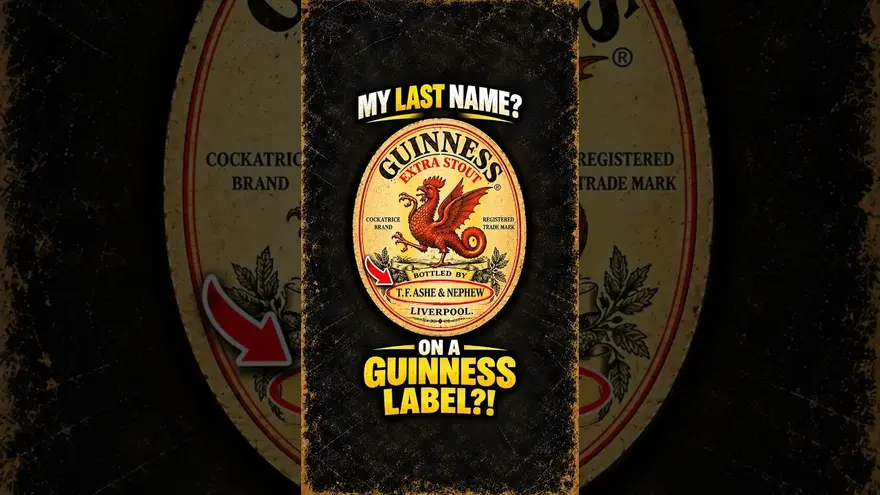
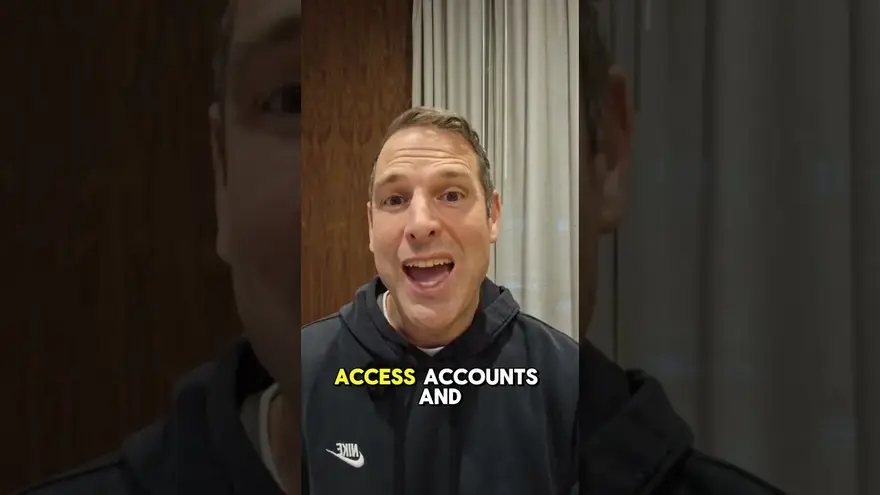

My AI Blog Published 1,400 Articles. Then Google Visibility Fell 97%
A look back at my autonomous AI blog and its results. Publishing is currently paused.
Demonstration build. Contains example entries that are not real. Back to the demonstration
AI explained in plain English, and what happens when I put it to work. New videos appear here as they go up on YouTube.
Latest video · Dec 3, 2026
An example upload for the demonstration, not a real video. The project: https://kenashe.ai/building/example-recipe-card-maker/
A look back at my autonomous AI blog and its results. Publishing is currently paused.

I recently created a two-minute AI short film called Returning Your Things. Making the images was only part of the challenge. Keeping characters, objects, and emotions consistent across shots took a lot more thought than I expected.
A man crosses a snow-covered city on a winter night to return his ex's belongings.

Can two autonomous AI agents discover each other, buy and sell services, and complete a transaction without using a centralized marketplace?

Learn how to solve the Bambu Lab Burr Puzzle with this clear, step-by-step assembly guide. I'll show you how all six pieces fit together and demonstrate the complete solution twice so you can follow along.
How do you file a trademark using AI without hiring a lawyer? In this video, I walk through how I used ChatGPT and Claude to research trademarks, evaluate potential conflicts, select trademark classes, and submit my own applications to the U.S. Patent and Trademark Office (USPTO).

ENSv2's activation vote has passed, bringing some significant changes to .eth domain renewals.

ENSv2 is moving toward activation, and the DAO vote is now live. If you own a .eth name, what does this mean for renewal prices, migration, and your existing names?

I built an AI agent that finds five new websites every day, creates accounts, verifies emails, and links back to my personal website. The best part? It does the work without me.
Under a minute each.



